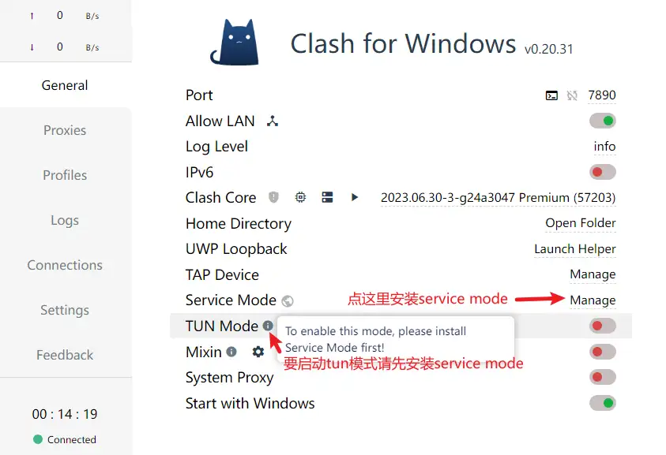
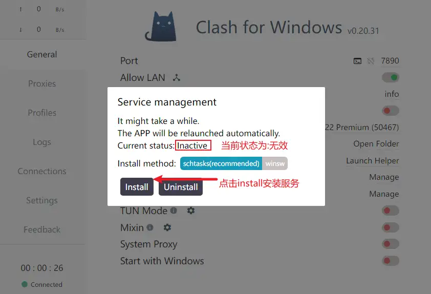
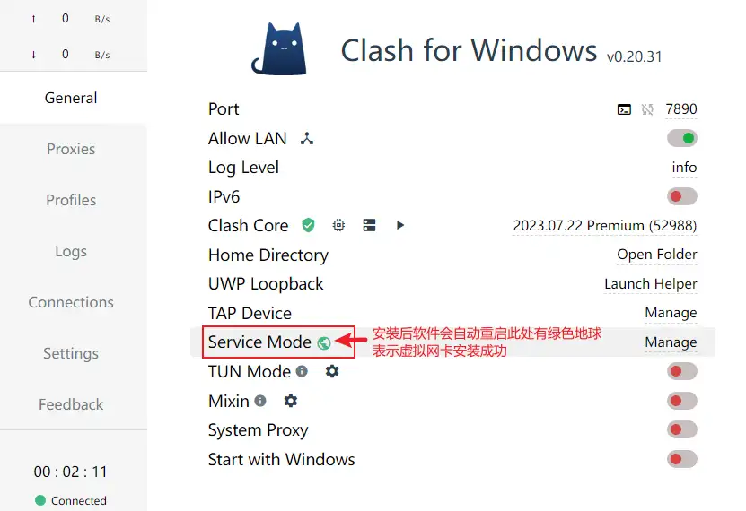

2024-03-09
clash等代理问题
修改于: 2024-03-09关于普通版clash的代理问题
- 规则: 你购买的节点代理商那边有一个分流规则, 一般是国内的网站不走代理, 国外的网站走代理
- 全局: 全部都走代理
注解
这里的全局代理的意思并不是你设备上的所有软件都可以使用这个代理, 而是指你 通过代理访问的所有网站都不进行分流
如果想要设备上其他软件走代理, 要看此软件是否支持了, 有的可以手动在相应的软件内配置代理, 配置自动识别手动指定等.
比如需要用到yarn下载包, 命令行配置下本地clash代理地址即可:
yarn config set proxy http://127.0.0.1:7890
对于不支持的, 那就只有不用或者用 Proxifier 强制指定了(付费软件, 暂未用过)
Clash-开启 TUN 模式
TUN 模式支持本地软件大部分都适用代理, 解决了上面提到的问题
开启教程
- 软件打开的界面未做任何设置的情况下如图所示。要启用 TUN 模式 需要先安装 Service Mode 服务，点击后面 Manage 安装。

- 点击 Service Mode 后的 Manage 后会弹出如图所示对话框，当前的状态显示为 无效 我们点击 Install

- Service Mode 服务安装完成后 Clash for Windows 会自动重启，Service Mode 后面会显示一个绿色的小地球，表示安装成功

- 配置好 Clash for Windows 代理，开启 TUN Mode 后面的开关,然后再开启 System Proxy 就可以使用 TUN 代理上网了。
注解
- TUN 模式仍然是一种有限的全局代理，一些系统应用或软件内部有自己的网络解析机制，是无法完全隐藏自己的个人 ip 信息的。
- 网络并非法外之地，非技术人员不要觉得开个代理就没人能找到你，大家都是娱乐一下刷个剧打个游戏也不必担心会有人找。
Clash Verge
原来的 Clash 跑路了, 2024的今天发现了后继者, Clash Verge ,